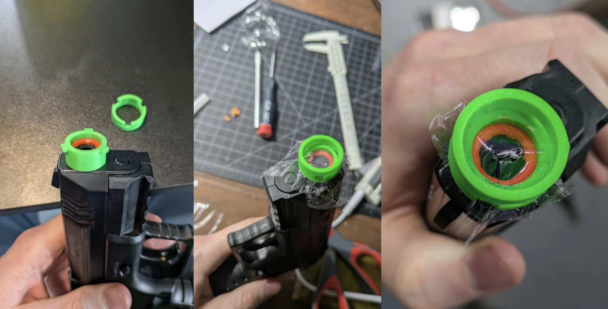
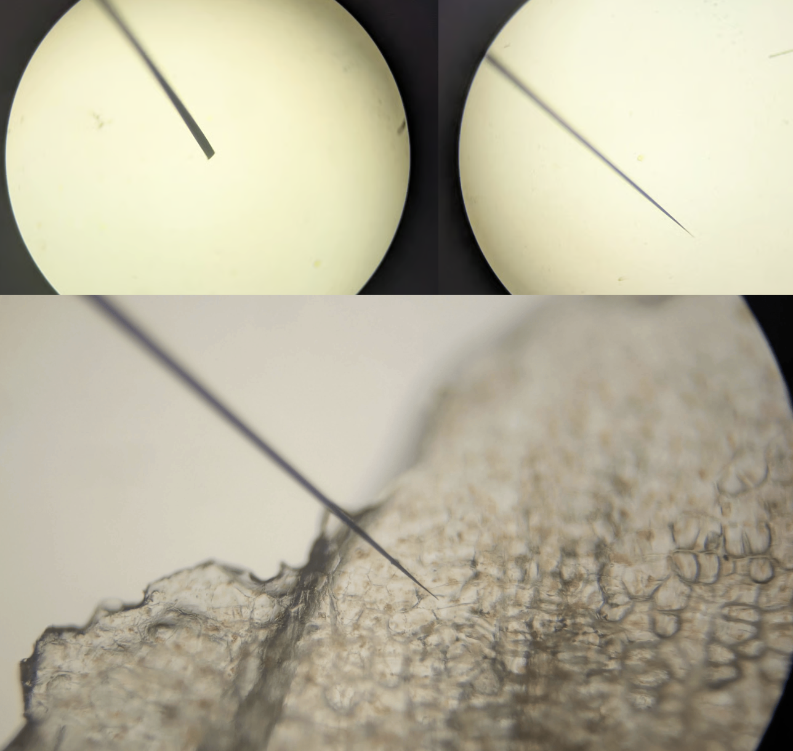

AGGG (Airsoft Gun Gene Gun) Part 1 - The Idea
I have a wacky idea for a biolistics-style transformation method that wouldn’t need a gene gun (sneak peek at the end of this post). Explaining it to a friend, he asked why not make a gene gun and sent me some links to DIY attempts. On reflection, I realized that they were building bad versions of something that already exists. A gene gun takes ~800PSI air, adds a valve to release it quickly, directing it with a barrel to accelerate the carriers. An airsoft gun takes 800PSI air, has a trigger mechanism for releasing it in pulses… This post is me printing an adapter for the end and testing it out - looks promising! Hopefully I can test this with DNA soon if I find a way to get some.

Background
There are various ways of getting DNA into organisms. For some bacteria, you can use heat shock - this is what I’ve done for my engineering of E. coli. For many cells, ‘electroporation’ is an option - basically, zap them and the DNA will get in by magic (but only into a small fraction of cells). (I think a piezo sparker from a BBQ lighter might do the trick TBH - future project right there). For plants, scientists sometimes use a bacterium called Agrobacterium tumefaciens that naturally infects plants and inserts its DNA into the plant genome. (Evolved genetic engineering! How cool!!). But it doesn’t work on everything, and also some places are touchy about you using a plant pathogen to do stuff, even if it’s found everywhere and also the lab versions have all the nasty bits removed. Anyway, so there are downsides to all of these methods.
An older technique that still gets used a lot, because it has a different set of pros and cons, is biolistics - shooting tiny particles coated in DNA into cells. This is done with a ‘gene gun’ that uses high-pressure gas to accelerate the particles to high speed, so they can penetrate cell walls and membranes. The particles are usually made of gold or tungsten, because they’re dense and inert. The DNA is stuck to these particles using calcium chloride and spermidine (salmon sperm). Machines cost tens of thousands of dollars, and are high-pressure and scary. They do a lot of damage to the tissue, and need fiddling to get the right settings. So people don’t use them much. Also you’re literally shooting gold, and everything involved is expensive. The disks (just pieces of kapton AFAICT) are expensive even.
The Idea
Anyway, as I said in the intro, why not leverage an airsoft gun to DIY one? So I handed papa Bezos $37 dollars for the ‘Elite ForceCombat Zone Enforcer Clear’ - a nice simple pistol (no blowback, so >100 shots per 12g CO2 cartridge). I 3D printed a little adapter that press-fits onto the front, with a way to press on a second part and twist to lock it on. Cad model here.

I don’t want to spend $$$ on facy metal powder and salmon sperm, so I’d like to experiment with different carriers. One idea I had is to use diatomaceous earth (DE) - a bunch of spiky silica shells about the right size, since I found a tub of it in the basement. Having a quick look around, seems like others have tried a few random things like clay with some success. I do have some spare plasmid but no good way to quantify how much that DNA sticks to a given carrier, so I might wait til later for that, or try some runs first in case it all magically works first time (unlikely).
Testing
Anyway, to visualize the spread I added a pinch of potassium permangate to some cling film, chucked it up (I’m smug everything fit perfectly first time) and fired it at some innocent MS media I had sitting nearby from some tissue culture work (TODO, blog posts about that). The result is a perfect ‘real life data viz’ example:

The idea is that in the center it might be too much and blast apart the cells, and at the edges too little, but in the sweet spot you might get transformations. And then the idea is you’ll select the transformed tissue and grow it out (e.g. with antibiotic that your plasmid confers resistance to, or with a visual marker like GFP).
I also tried adding some DE to Methylene blue dye (since it’s hard to see white on white) and fired it into a paper towel. It all looks promising to me - although I have no reference for what a ‘good’ gene gun shot looks like haha. It took 10 minutes to model and print the adapter though, so I have plenty of variables to play with. Distance to target, adding a diverging nozzle, different carriers, films (I used a 5uL drop of dye+DE on clingfilm for the test), etc etc. It’s promising that the liquid atomized nicely - others seem to use the solid particle carriers and dry them off. Dry would be good in some ways (‘bullets’ such as tubes with the pre-dried carriers are said to last months once prepped) but if e.g. I could add a few uL plasmid to some carrier and blast that right away it would save a lot of work.
Anyway, until I get plasmid and try this out in plant tissue, I should probably slow down on this. Anyone with an addgene account who feels like buying me a plasmid LMK ;) I’m also hoping to chat to someone I know who is far more knowledgeable about all this and actually has a gene gun, but that’ll be in a few weeks time.
PS: The Other Idea
For the curious, my other idea is plant micro-accupuncture. I got some 50-micron tungsten wire, and figured out how to sharpen it in a flame (inspired by this video on DIY gecko tape) - I figure I’ll make a bundle of these sharp micro-needles, lay down a layer of DNA over the plant tissue, and go to town. No idea if it’ll work, but if it does it’ll be a cool way to do localised transformations without all the damage of a gene gun.

Amazing how sharp you can get it, this is at 200X magnification. Reference is carrot cells (I’m working carrot callus culture as a nice model system for plant transformation).
Anyway, very much early days but I thought rather write these ideas down and get them out there, and then when I get results (could take a while) I can at least refer to part 1 and save myself some typing :)
There’s a joy to doing something like this. I know there are smart people who’ve done tons of research, but I also think the incentices in academia etc aren’t set up to tinker. You have a fancy gene gun, why work on a cheap one? Gold works, why swap? After all, you want to do your transform and write your paper and get your PHD. But for me, if we can lower the barrier to entry all the way, way more people can try stuff and maybe find new things. So, I have looked stuff up here and there, but I’m trying to also keep my outsider status as long as possible so I don’t get too stuck in “the way it’s always been done”. You,dear reader, will get to see if this approach works. There’s no losing though! Worst case, well, I got an airsoft gun, and may have already scattered some BBs around the basement with a big grin on my face :)
PS: This is an amusing area to try to use AI with - they’re all completely uninterested in assisting with ‘building a projectile weapon’ and will be vague to the point of uselessness on many related questions. More fun thinking for me :)
PPS: Relevant XKCD: https://xkcd.com/1217/
PPPS: I made a bundle of sharpened wires attached to an electric toothbrush, and it seemed to ~successfully tatoo MB into onion skin, which is promising. When they get all bent up you can re-sharpen in the flame. Penetration depth not excellent, stiffer thicker wire might have been a good idea.